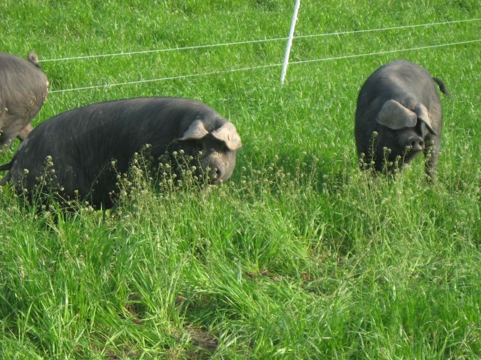
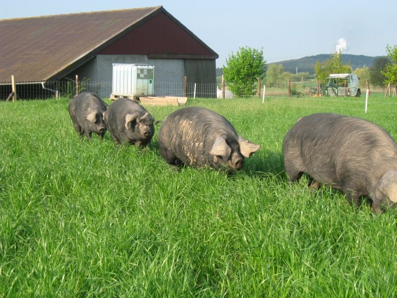

Freiland aus dem Steigerwald
Schwarze Schweine.
Grüne Weide.
Cornwallschweine, eine bedrohte Rasse, das ganze Jahr draußen. Du reservierst dein Teil – geschlachtet wird, wenn das Schwein vergeben ist.
- Frischfleisch
- ab – €/kg
- Nächste Abholung
- –
- Ganzjährig draußen
- Eigenes Futter, gentechnikfrei
- Ringelschwanz bleibt dran
- Hofnahe Metzgerei
- Bedrohte Rasse
Frischfleisch · nur Abholung
Dein Teil von Schwein Nr. 15
Wir verkaufen jedes Schwein ganz. Erst wenn alles vergeben ist, geht es zur Metzgerei – so bleibt nichts übrig.
Tippe auf ein TeilstückSchwein Nr. 15
verfügbar knapp vergeben
Alle Teilstücke
So entsteht der Tagespreis
Wir verkaufen jedes Schwein komplett. Darum richtet sich der Preis eines Teilstücks nach der noch verfügbaren Menge und den Tagen bis zum Schlachttermin. Er bewegt sich in einem festen Rahmen von höchstens 15 % nach oben oder unten, ändert sich höchstens einmal am Tag (um 0 Uhr), ist für alle Kundinnen und Kunden gleich und wird nicht persönlich angepasst. Der Preis, den du beim Bestellen siehst, gilt für deine Bestellung.
In drei Schritten
So funktioniert’s
- 1
Reservieren
Teilstücke oder einen fertigen Anteil wählen. Bezahlt wird erst bei Abholung – nach genauem Gewicht.
- 2
Schlachtung, wenn das Schwein voll ist
Ist alles vergeben, bringen wir es zur Metzgerei in der Nähe. Du bekommst eine Nachricht mit dem Termin.
- 3
Abholen
Freitags 9–18 Uhr im Hofladen in Oberlaimbach oder am Verkaufswagen in Nürnberg Süd (Do/Fr) und Scheinfeld.
Geräuchert · vakuumiert · Versand
Dauerware, direkt nach Hause
Versand jeden Montag. Ab 50 € versandkostenfrei, sonst 10 € je Paket.
Laimbachhof · Oberlaimbach bei Scheinfeld
Der Hof in Zahlen
- 1896kam das Cornwallschwein nach Deutschland
- 2009zogen unsere ersten Cornwalls auf den Hof
- 365Tage im Jahr sind die Schweine draußen
- Fr 9–18Hofladen, dazu der Verkaufswagen in Nürnberg und Scheinfeld

Live Platzhalter – hier läuft später die Weide-KameraLive von der Weide
Rund um die Uhr reinschauen, was Nr. 15 gerade macht. Die Kamera kommt, sobald am Stall Internet liegt.